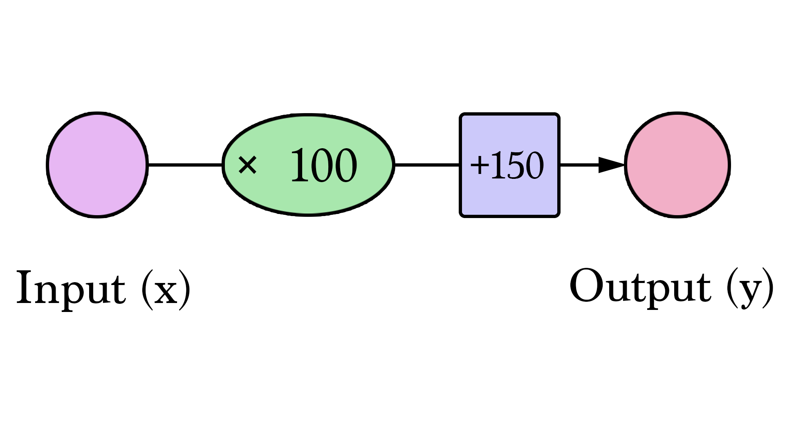

A Visual and Interactive Guide to the Basics of Neural Networks!

Start here
Let's start with a simple example. Say you're helping a friend who wants to buy a house. She was quoted $400,000 for a 2000 sq ft house (185 meters). Is this a good price or not?
It's not easy to tell without a frame of reference. So you ask your friends who have bought houses in that same neighborhoods, and you end up with three data points:
| Area (x) | Price (y) |
|---|---|
| 2,104 | 399,900 |
| 2,104 | 329,900 |
| 2,400 | 369,000 |
Personally, my first instinct would be to get the average price per sq ft. That comes to $180 per sq ft.
Welcome to your first neural network! Now it's not quite at Siri level yet, but now you know the fundamental building block. And it looks like this:

Diagrams like this show you the structure of the network and how it calculates a prediction. The calculation starts from the input node at the left. The input value flows to the right. It gets multiplied by the weight and the result becomes our output.
Multiplying 2,000 sq ft by 180 gives us $360,000. That's all there is to it at this level. Calculating the prediction is simple multiplication. But before that, we needed to think about the weight we'll be multiplying by. Here we started with an average, later we'll look at better algorithms that can scale as we get more inputs and more complicated models. Finding the weight is our "training" stage. So whenever you hear of someone "training" a neural network, it just means finding the weights we use to calculate the prediction.

This is a form of prediction. This is a simple predictive model that takes an input, does a calculation, and gives an output (since the output can be of continuous values, the technical name for what we have would be a "regression model")
Let us visualize this process (for simplicity, let's switch our price unit from $1 to $1000. Now our weight is 0.180 rather than 180):

Harder, Better, Faster, Stronger
Can we do better than estimate the price based on the average of our data points? Let's try. Let's first define what it means to be better in this scenario. If we apply our model to the three data points we have, how good of a job would it do?
That's quite a bit of yellow. Yellow is bad. Yellow is error. We want to shrink yellow as much as we can.
| Area (x) | Price ($1000) (y_) | Prediction (y) | y_-y | (y_-y)² |
|---|---|---|---|---|
| 2,104 | 399.9 | 379 | 21 | 449 |
| 1,600 | 329.9 | 288 | 42 | 1756 |
| 2,400 | 369 | 432 | -63 | 3969 |
| Average: | 2,058 | |||
Here we can see the actual price value, the predicted price value, and the difference between them. Then we'll need to average these differences so we have a number that tells us how much error there is in this prediction model. The problem is, the 3rd row has -63 as its value. We have to deal with this negative value if we want to use the difference between the prediction and price as our error measuring stick. That's one reason why we introduce an additional column that shows the error squared, thus getting rid of the negative value.
This is now our definition of doing better -- a better model is one that has less error. Error is measured as the average of the errors for each point in our data set. For each point, the error is measured by the difference between the actual value and the predicted value, raised to the power of 2. This is called [Mean Square Error](http://mste.illinois.edu/patel/amar430/meansquare.html). Using it as a guide to train our model makes it our **loss function** (also, **cost function**).
Now that we defined our measuring stick for what makes a better model, let's experiment with a couple more weight values and compare them with our average pick:

We can't improve much on the model by varying the weight any more. But if we add a bias we can find values that improve the model.
Our lines can better approximate our values now that we have this b value added to the line formula. In this context, we call it a "bias". This makes our neural network look like this:

We can generalize it by saying that a neural network with one input and one output (*spoiler warning:* and no hidden layers) looks like this:
In this graph, W and b are values we find during the training process. X is the input we plug into the formula (area in sq ft in our example). Y is the predicted price.
Calculating a prediction now uses this formula:

So our current model calculates predictions by plugging in the area of house as x in this formula:

Train Your Predict House Price (NN)
How about you take a crack at training our toy neural network? Minimize the loss function by tweaking the weight and bias dials. Can you get an error value below 799?
| Error | ||
| Weight | 0 | |
| Bias | 0 | |
Automation
Congratulations on manually training your first neural network! Let's look at how to automate this training process. Below is another example with an additional autopilot-like functionality. These are the GD Step buttons. They use an algorithm called "Gradient Descent" to try to step towards the correct weight and bias values that minimize the loss function.
| Error | ||
| Weight | 0 | |
| Bias | 0 | |
The two new graphs are to help you track the error values as you fiddle with the parameters (weight and bias) of the model. It's important to keep track of the error as the training process is all about reducing this error as much possible.
How does gradient descent know where its next step should be? Calculus. You see, knowing the function we're minimizing (our loss function, the average of (y_ - y)² for all our data points), and knowing the current inputs into it (the current weight and bias), the derivatives of the loss function tell us which direction to nudge W and b in order to minimize the error.
Learn more about gradient descent and how to use it to calculate the new weights & bias in the first lectures of Coursera's [Machine Learning](https://www.coursera.org/learn/machine-learning) course.
And Then There Were Two #
Is the size of the house the only variable that goes into how much it costs? Obviously there are many other factors. Let's add another variable and see how we can adjust our neural network to it. Say your friend does a bit more research and finds a bunch more data points. She also finds out how many bathrooms each house has:
Our neural network with two variables looks like this:

We now have to find two weights (one for each input) and one bias to create our new model.
Calculating Y looks like this:

But how do we find w1 and w2? This is a little trickier than when we only had to worry about one weight value. How much does having an extra bathroom change how we predict the value of a home?
Take a stab at finding the right weights and bias. You will start here to see the complexity we start getting into as the number of our inputs increase. We start losing the ability to create simple 2d shapes that allow us to visualize the model at a glance. Instead, we'll have to mainly rely on how the error value is evolving as we tweak our model parameters.
| Error | ||
| Weight #1 | 0 | |
| Weight #2 | 0 | |
| Bias | 0 | |
Our trusty gradient descent is here to help once again. It still is valuable in helping us find the right weights and bias.
Features
Now that you've seen neural networks with one and two features, you can sort of figure out how to add additional features and use them to calculate your predictions. The number of weights will continue to grow, and our implementation of gradient descent will have to be tweaked as we add each feature so that it can update the new weights associated with the new feature.
It's important to note here that we don't blindly feed the network everything we know about our examples. We have to be selective about which features we feed the model. Feature selection/processing is an entire discipline with its own set of best practices and considerations. If you want to see an example of the process of examining a dataset to choose which features to feed a prediction model, check out [A Journey Through Titanic](https://www.kaggle.com/omarelgabry/titanic/a-journey-through-titanic). It's a notebook where [Omar EL Gabry](https://twitter.com/Omar_ElGabry) narrates his process for solving Kaggle's Titanic challenge. Kaggle makes available the passenger's manifest of the Titanic including data like name, sex, age, cabin, and whether the person survived or not. The challenge is to build a model that predicts whether a person survived or not given their other information.
Classification
Let's continue to tweak our example. Assume your friend gives you a list of houses. This time, she has labeled which ones she thinks have a good size and number of bathrooms:
| Area (sq ft) (x1) | Bathrooms (x2) | Label (y) |
| --- | --- | --- |
| 2,104 | 3 | Good |
| 1,600 | 3 | Good |
| 2,400 | 3 | Good |
| 1,416 | 2 | Bad |
| 3,000 | 4 | Bad |
| 1,985 | 4 | Good |
| 1,534 | 3 | Bad |
| 1,427 | 3 | Good |
| 1,380 | 3 | Good |
| 1,494 | 3 | Good |
She needs you to use this to create a model to predict whether she would like a house or not given its size and number of bathrooms. You will use this list above to build the model, then she will use the model to classify many other houses. One additional change in the process, is that she has another list of 10 houses she has labeled, but she's keeping it from you. That other list would be used to evaluate your model after you've trained it -- thus trying to ensure your model grasps the conditions that actually make her like the features of the house.
The neural networks we've been toying around with until now are all doing "regression" -- they calculate and output a "continuous" value (the output can be 4, or 100.6, or 2143.342343). In practice, however, neural networks are more often used in "classification" type problems. In these problems, the neural network's output has to be from a set of discrete values (or "classes") like "Good" or "Bad". How this works out in practice, is that we'll have a model that will say that it's 75% sure that a house is "Good" rather than just spit out "good" or "bad".
One way we can transform the network we've seen into a classification network is to have it output two values -- one for each class (our classes now being "good" and "bad"). We then pass these values through an operation called "[softmax](https://rasbt.github.io/mlxtend/user_guide/classifier/SoftmaxRegression/)". The output of softmax is the probability of each class. For example, say that layer of the network outputs 2 for "good" and 4 for "bad", if we feed [2, 4] to softmax, it will return [0.11, 0.88] as the output. Which translates the values to say the network is 88% sure that the inputted value is "bad" and our friend would not like that house.
Softmax takes an array and outputs an array of the same length. Notice that its outputs are all positive and sum up to 1 -- which is useful when we're outputting a probability value. Also notice that even though 4 is double 2, its probability is not only double, but is eight times that of 2. This is a useful property that exaggerates the difference in output thus improving our training process.
| | output |
| --- | --- |
| softmax([ 1 ]) | [ 1 ] |
| softmax([ 1, 1 ]) | [ 0.5, 0.5 ] |
| softmax([ 0, 1 ]) | [ 0.26, 0.73 ] |
| softmax([ 2, 4 ]) | [ 0.11, 0.88 ] |
| softmax([ 5, 10 ]) | [ 0.007, 0.993 ] |
| softmax([ -1, 0, 1 ]) | [ 0.09, 0.24, 0.66 ] |
| softmax([ 1, 2, 4 ]) | [ 0.04, 0.11, 0.84 ] |
As you can see in the last two rows, softmax extends to any number of inputs. So now if our friend adds a third label (say "Good, but I'll have to airbnb one room"), softmax scales to accomedate that change.
Take a second to explore the shape of the network as you vary the number of features (x1, x2, x3...etc) (which can be area, number of bathrooms, price, proximity to school/work...etc) and vary the number of classes (y1, y2, y3...etc) (which can be "too expensive", "good deal", "good if I airbnb", "too small"):
| Features (x): |
|
| Classes (y): |
|